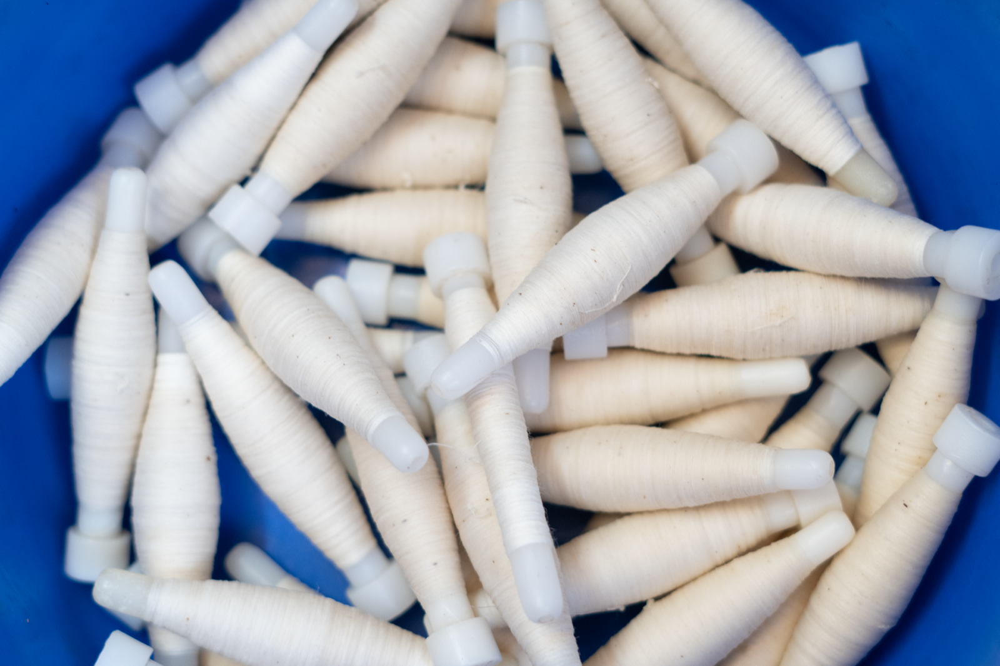
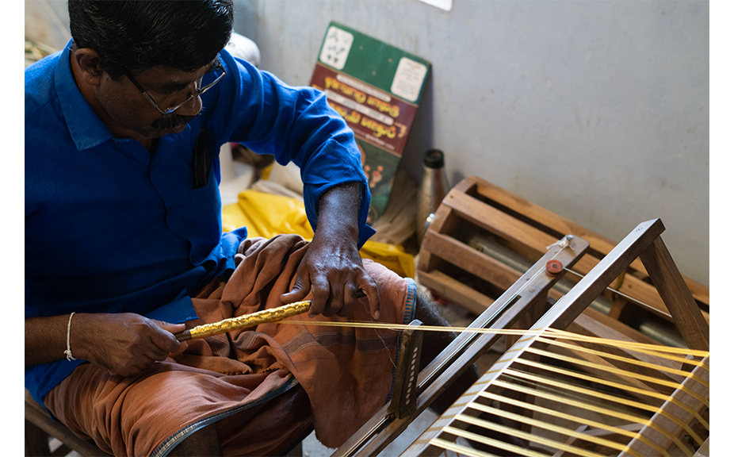
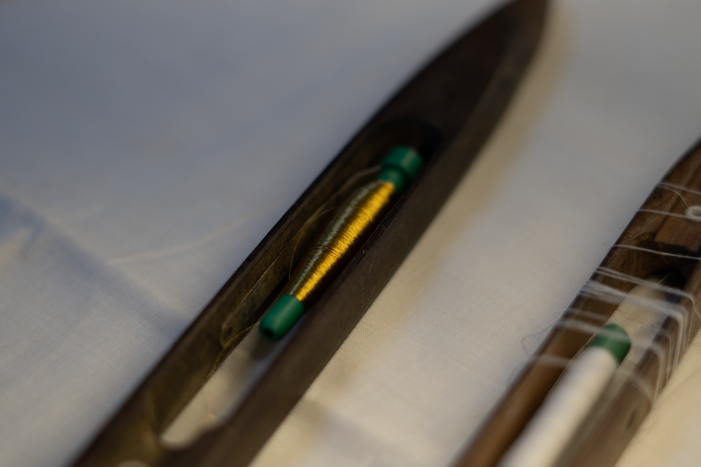
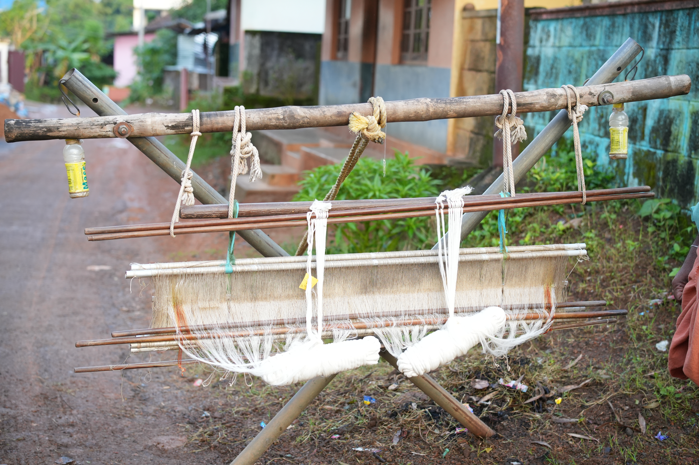
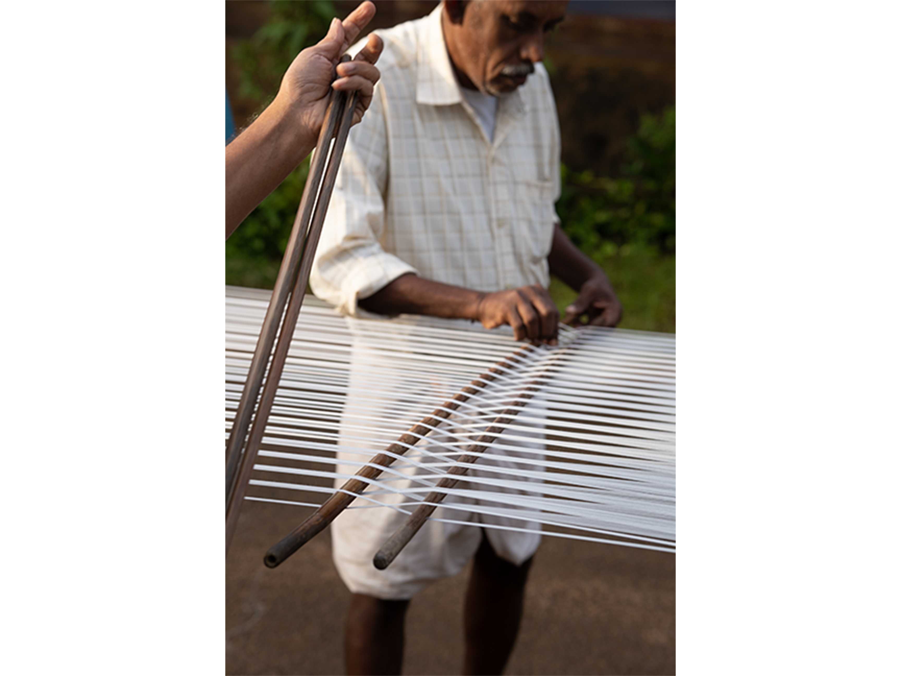
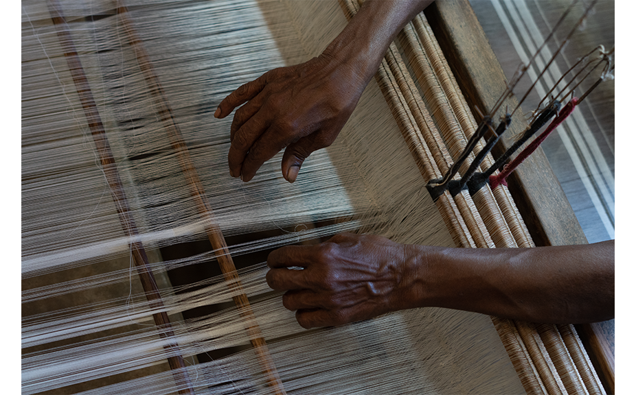
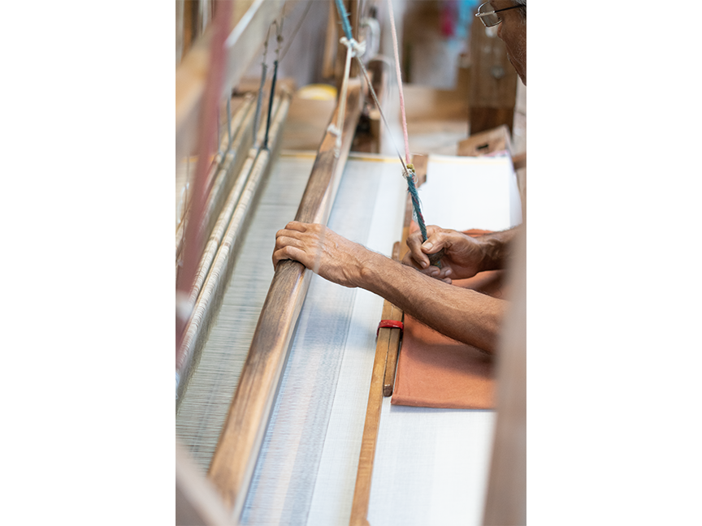

The Art of Handloom
From Thread to Tradition
Each fabric is born from a meticulous process refined over generations.

The Weaving Journey
Follow the intricate stages from raw yarn to
the final Kasavu masterpiece.
Raw Materials

Cotton yarn — the primary material — is sourced from Salem and Coimbatore in bundles. Zari, a gold-painted polyester yarn used for the iconic kasavu border, comes from Surat. The bobbins are soaked in rice starch water after winding to strengthen the threads and improve the fabric's durability. Wax sourced from local suppliers is used to polish the finished kasavu.
Winding — Zari on the Charkha

Zari yarn is drawn from a hank and wound onto a small spool using a charkha. This step demands precision — zari threads are delicate and prone to tangling. The charkha ensures smooth and even winding, preparing the zari for use in intricate border weaving. Alongside this, white cotton yarn is wound onto bobbins using a simple winding frame, ready for the loom.
Winding — Loading the Shuttle

The wound zari is transferred to a pirn — a slender cone-shaped spool that fits snugly inside the shuttle. Once loaded, the shuttle is placed on the loom for border weaving, where zari becomes the weft thread that adds shimmer and elegance to the fabric. Cotton bobbins are similarly loaded for weaving the body of the fabric.
Warping — Setting Up

Two strong wooden stands are tied using rope to a fixed hook half-buried in the road — a permanent fixture kept specifically for warping. The stands are placed about 37 metres apart, marking the required warp length. Yarn from a creel is unravelled and pulled across the full stretch of the street to the warp roller. This outdoor process requires at least 7 skilled people and uses the entire road.
Warping — Rolling & Sectioning

Long wooden sticks are inserted between yarns at regular intervals to act as spacers, maintaining even thread spacing. A rope of predetermined length divides the yarn into sections based on garment length — mundus or sarees. Newspapers are laid over the warp for protection during rolling. Once fully wound, the sticks are removed and the completed warp beam is carried back to the weaving cluster.
Weaving — Preparing the Loom & Denting

The warp roller is fixed securely onto the loom and the shuttle loaded with bobbins. Zari threads, if required, are inserted separately using a pulley system. Heddles are connected to treadles using ropes to enable movement during weaving. Warp threads are passed through the reed to space them evenly, then tied tightly to the padamaram (cloth beam) — completing the loom setup.
Weaving — The Weave & Border

The weaver presses the treadle, lifting specific warp threads to create a shed. A rope sends the shuttle across carrying the weft yarn, and the reed beats each weft line into place. As the fabric nears completion, plain cotton weft is replaced with zari to form the kasavu border. A small gap is left between sets; once the cloth beam is full, fabric is cut, folded, and stacked while the warp roller is replenished for the next cycle.
More Than a Process

For our weavers, this is not merely a technical procedure. It is Deiva Thozhil — a divine responsibility passed down through generations. Each step is performed with reverence, and every fabric that emerges from our looms is a testament to the artisan's dedication.
In an age of mechanization, Eravathody continues to honor the slow, deliberate pace of handloom weaving. We believe that true craftsmanship cannot be rushed, and that the beauty of our fabrics lies in the human touch woven into every thread.